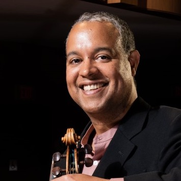

Artist Portfolio
Ilmar Gavilan
Cuban-American violinist, educator, chamber musician, and founding first violinist of the Grammy-winning Harlem Quartet.
View Projects
Performance And Teaching
A career spanning concert stages, classrooms, and collaboration

Born in Havana, Ilmar Gavilán built an international career that has taken him from early studies in Moscow and Spain to concert halls, festivals, and universities across the United States and abroad.
His public work brings together solo performance, chamber music, Afro-Cuban and jazz collaborations, and a longstanding commitment to mentorship through conservatory teaching, residencies, and masterclasses.
About
A brief introduction
Ilmar Gavilán is widely recognized for combining classical precision with stylistic openness. His career includes concerto appearances with major symphonies, collaborations with artists such as Itzhak Perlman, Chick Corea, and Gary Burton, and teaching roles at institutions including Manhattan School of Music and Montclair State University.
Featured Videos
YouTube performances and collaborations
These are public videos connected to Ilmar Gavilán and related
projects. You can replace or expand them in script.js.